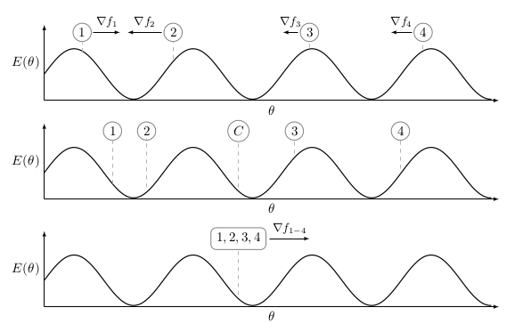
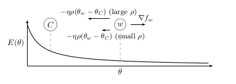

There are two distinct approaches towards solving data parallelism. Personally, the most conceptually straightforward one is synchronous data parallelism. In synchronous data parallelism, as depicted in Figure 3, all workers compute their gradients based on the same center variable. This means whenever a worker is done computing a gradient for the current batch, it will commit a parameter (i.e., the gradient or the parameterization of the model) to the parameter server. However, before incorporating this information into the center variable, the parameter server stores all the information until all workers have committed their work. After this, the parameter server will apply a specific update mechanism (depending on the algorithm) to incorporate the commits into the parameter server. In essence, one can see synchronous data parallelism as a way to parallelize the computation of a mini-batch.
However, due to unmodeled system behaviour of the workers, workers might commit their results with a certain delay. Depending on the system load, this delay can be quite significant. As a result, this data parallel method is a case of the age-old saying "a synchronous data parallel method is only as strong, as the weakest worker in the cluster" :-).
Model Averaging
In essence, this is a data parallel approach as mentioned in the introduction. However, in contrary to more conventional data parallel approaches, there is no parameter server. In model averaging, every worker will get a copy of the model at the start of the training period. However, one can have different weight initialization techniques for the workers to cover more of the parameter space after several iterations, as shown in Figure 4. Though, it is not recommended to do this since this will result in very different solutions for every worker. Thus wasting initial iterations converging to a "good solution" on which all workers "agree". However, this problem is related to most distributed optimization algorithms discussed here, and will be discussed in more detail in the following blog posts.
After every worker is initialized with a copy of the model, all workers start the training procedure independently from each other. This means that during the training procedure, no communication between the workers occurs. Thus, eliminating the communication overhead that is present in approaches with parameter servers. After the end of an epoch, i.e., a full iteration of the dataset, the models are aggregated and averaged on a single worker. The resulting averaged model will then be distributed to all workers, where the training process repeats until the averaged model converges.

Figure 4: In this setting we have 4 independent workers, each having a randomly initialized model. In order to simplify the situation, let us assume we can obtain the gradient directly from E(\theta), which is our loss function. In model averaging, every worker only applies gradient descent to its own model without communicating with other workers. After the end of an epoch, as shown in the center plot, the models are averaged in order to produce a central model. In the following epoch, the central model will be used as a starting point for all workers.
EASGD
EASGD, or Elastic Averaging SGD, introduced by Zhang et al. [3], is a distributed optimization scheme designed to reduce communication overhead with the parameter server. This is in contrast to approaches such as DOWNPOUR, which most of the time require a small communication window in order to converge properly. The issue with a small communication window is that the learning process needs to be stopped in order to synchronize the model with the parameter server, and as a result, limiting the throughput of the training process. Of course, the number of parameters in a model is also an important factor. For example, one can imagine that having a model with 100 MB worth of parameters could severely influence the training performance if every 5 mini-batches a synchronization with the parameter server would occur. Furthermore, the authors state that due to the distributed nature, exploration of the nearby parameter space by the workers actually improves the statistical performance of a model with respect to sequential gradient descent. However, at the moment, we do not have any evidence to support this claim, nor to deny it. What we do observe, is that the statistical performance of a model after a single epoch, is usually (significantly) less than a single epoch of Adam (sequential training) and ADAG (distributed training). However, if we would let EASGD reach the same amount of wallclock training time, then we still have an identical or slightly worse model performance. So there is evidence to suggest that this claim is not completely true, at least, in the case of EASGD. This however, requires more investigation.
The authors solve the communication constraint by applying an "elastic force" between the parameters of the workers and the center variable. Furthermore, due to the elasticity and reduction in communication with the parameter server, the workers are allowed to explore the surrounding parameter space. As stated above, the authors claim that allowing for more exploration can be beneficial for the statistical performance of the model. However, we argue that, as in model averaging, this will only work well if the workers are in the neighbourhood of the center variable, we will show this empirically in the Experiments section. However, in contrast to model averaging, the workers are not synchronized with the center variable. This begs the question, how does EASGD ensure that the workers remain in the "neighbourhood" of the center variable? Because as in model averaging, too much exploration of the parameter space actually deteriorates the performance of the center variable, and may prevent convergence, because the workers cover inherently different spaces of the parameter space, as shown in Figure 4. However, if the elasticity parameter is too high, exploration will not take place at all.
\theta^i_{t+1} = \theta^i_t - \eta\nabla f(\theta^i_t) - \eta\rho(\theta^i_t - \theta^c_t)
\theta^c_{t+1} = (1 - n\eta\rho) \theta^c_t + \eta\rho(\frac{1}{n} \sum_{i = 0}^{n} \theta^i_t)
To fully understand the implications of the EASGD equations, as shown in Equation 1 and Equation 2, we refer the reader to Figure 5, which shows the intuition behind the elastic force. Having two vectors, the gradient \nabla f, and the elastic difference \eta\rho(\theta^i_t - \theta^c_t) where \eta is the learning rate and \rho is the elasticity parameter, the authors say when \rho is small, you allow for more exploration of the parameter space. This can be observed from Figure 5. When \rho is small, the vector \eta\rho(\theta^i_t - \theta^c_t) will be small as well (unless the distance between the worker and the center variable is large). As a result, the attraction between the center variable and the worker is small, thus, allowing for more exploration of the parameter space.
Analogously, imagine that you are walking with your dog, and the dog is responsible for getting you home (guiding you to a minimum). If you would let your dog drift too far away from you (because you have a leash which is very flexible (small \rho)). In the most extreme case, the dog will get home without you because your leash was simply too flexible. As a result, the dog could not pull you home. At this point you think, maybe I should buy more dogs? Thinking that together they will help you. However, due to the nature of these creatures you soon realize that instead of going home, they all go to different places (multiple workers in the parameter space having different inputs, e.g., one dog sees a particular tree, while an other dog sees a bush, etc.). From this experience, you notice that the problem is the leash, it is way too flexible because the dogs are all over the place. As a result, you buy a less flexible leash, with the effect that the dogs stay closer to you, and eventually "pull" together to bring you home faster.

Figure 5: The worker variable w is exploring the parameter space in order to optimize C. However, the amount of exploration is proportional by the elasticity factor \rho, and the difference (\theta^w_t - \theta^C_t). In general, when \rho is small, you allow for more exploration to occur. It is to be noted, that as in model averaging, too much exploration will actually deteriorate the statistical performance of a model (as shown in the first subfigure of Figure 4), because the workers do not agree on a good solution. Especially when you take into account that the center variable is updated using an average of the worker variables, shown in Equation 2.
Now, from Equation 1 and the intuition above, we can expect that for some worker update i within a communication window, the accumulated gradient is larger or equal to the elastic force. As a result, this prevents the workers from further exploration (as expected). However, a significant side-effect is that the following gradient computations are wasted since they are countered by the elastic difference, as shown in Figure 5. Using the analogy from above, this is equivalent to a situation where no matter how hard a dog is trying to pull, you just don't let it go any further. Thus, the efforts of the dog are wasted. This condition is described by Equation 3.
- \sum_i - \eta\nabla f(x_{t + i};\theta_{t + i}) \geq -\eta\rho(\theta_{t + i + 1} - \theta_t^C)
A straightforward technique to prevent the squandering of computations after the condition described by Equation 3, is to simply check for this condition after the computation of every mini-batch. When this condition is met, then the term \sum_i - \eta\nabla f(x_{t + i};\theta_{t + i}) is communicated with the parameter server. As a result, we do not waste any computations, and furthermore, we loose a hyperparameter since the communication window is now controlled (indirectly) by the hyperparameter \rho, which controls the elastic force. In essence, the core idea of ADAG (which will be mentioned later in this blog post), can also be applied to this scheme to even further improve the quality of the gradient updates, and making the optimization scheme less sensitive to other hyperparameters, e.g., the number of parallel workers.